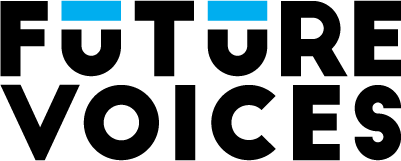

Internal edit board · 20 Aug 2026
Algae clip: six-scene social cut
A 29-second direction for Facebook and LinkedIn. Michelle’s exact audio stays intact. One optional AI beat earns its place by showing the hidden system behind the visible pool.

Michelle Stroy
Bigger than one reflecting pool.
Algae in the reflecting pool. That one’s big for me.
SCENE 01 / 06 · 00:00–00:03.4
Make the topic feel larger immediately.
“Algae in the reflecting pool. That one’s big for me.”
SourceInterview 04:42.510–04:45.779
Primary ownerRemotion
VisualReflecting Pool reference + transparent hook plate
StatusProposed · source image needs license
The spoken line names the object. The first-frame text supplies the tension. No logo animation before the hook.
Scene rail
Click a frame to inspect the quote, visual job, and engine owner.
What to source
- One licensed Reflecting Pool algae shot.
- One slow Colorado lake clip with room for a 4:5 crop.
- One 4–5 second scientific motion test. Abstract algae growth, nutrient flow, or water-system spread.
- The supplied Michelle end card. Rebuild only the CTA layer for motion.
Tool choice
Freepik / Magnific firstPremium is currently $20 monthly, or $14.50 per month billed annually. It covers stock, AI video models, and Magnific upscaling.
Higgsfield as the testBasic starts at $9 with selected models. Full model access starts at Pro: $29 monthly or $23 per month billed annually.
Copy implementation prompt
Build a 29-second Future Voices social cut from Stuart’s supplied 23.4-second algae clip. Master 1080x1920 at 29.97 fps with a center-safe 4:5 reframe. Use the six-scene timing and exact quotes on this board. Keep the source audio natural. Use one licensed Reflecting Pool shot, one slow Colorado lake shot, and at most one 4–5 second AI-generated scientific insert. Remotion owns the transparent hook and end-card plates. Premiere owns dialogue timing, stock movement, sound, assembly, and export. Deliver a clean H.264 MP4 plus synchronized SRT. Hold the supplied end card long enough to read. Treat “Watch the full conversation on Substack” as proposed until Stuart approves it.